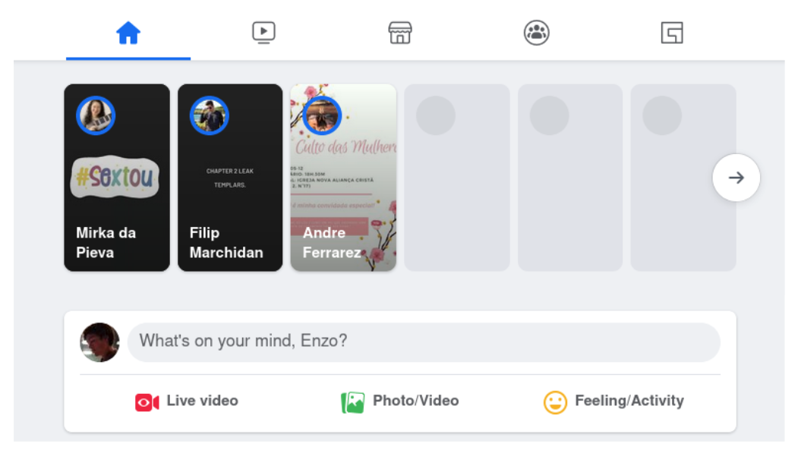
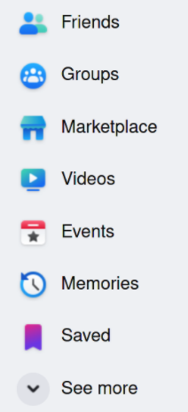
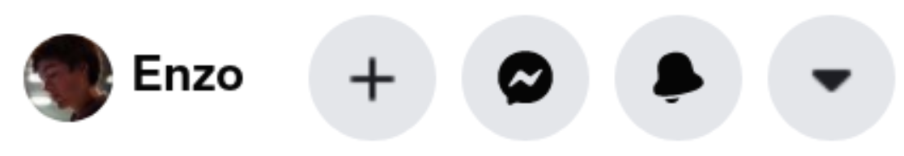

To create a Facebook account you need an email
Before getting started in Facebook we have to learn a few key terms:
Like: A like is a way to demonstrate appreciation for a post by clicking a heart icon. The person who made the post will see that you liked
Comment: Below a post there is
Friend
Timeline: Your timeline on Facebook
Notification: A notification is an alert which Facebook tells you whenever another user interacts with you, whether through giving you a ‘like’ sending you a message or many other things on the site
Stories: Stories on Facebook are temporary pictures you can upload that all your friends can see for 24 hours. For example, if you visit the beach and take a nice picture you can upload it to your Facebook story and all your friends will be able to see it for 24 hours.
Group: A Facebook group
Messenger: Messenger is how you chat with your friends on Facebook. It is
Opening up Facebook for the first time might be a bit overwhelming, but don’t worry we’re here to guide you…
Here we see the main part of Facebook. At the top we see a list of stories from your Facebook friends, under that we have a text box where you can write what's on your mind and post it to your timeline
On the left hand side of the screen we see eight buttons that we can press. For this beginner’s guide we will be focusing only on some of these sections, namely Facebook Groups, and Facebook Friends.
In the top right corner of the screen we see these four buttons. From right to left, the big + is the ‘Create’ tab, the speech bubble is the ‘Messenger’ tab, the bell icon is the ‘notification’ tab, and the arrow pointing downwards is the ‘Account settings’ tab.
Create: Create will allow you to make a post on your timeline, add something to your story, and create a new Facebook group.
Some important settings
- Your timeline
- Chat with messenger
- Facebook groups
- Facebook marketplace
- Videos, events, etc
Sending a New Message Roughdraft:
In the lower right hand corner, there is a circle icon with a pencil. This button opens a box that says “New message” and displays your list of friends. We can scroll and choose someone from this list to chat with. Select the person you would like to talk to and a text box will appear along the bottom of the screen. Once we have typed the desired message, we can hit the paper airplane icon to send the message! Now, when we check Facebook again later, hopefully they will have sent a message back.
Facebook Groups:
Facebook has a few different layers of privacy
If you feel like you need a little extra help, feel free to chat with an expert by clicking on the green chat icon.